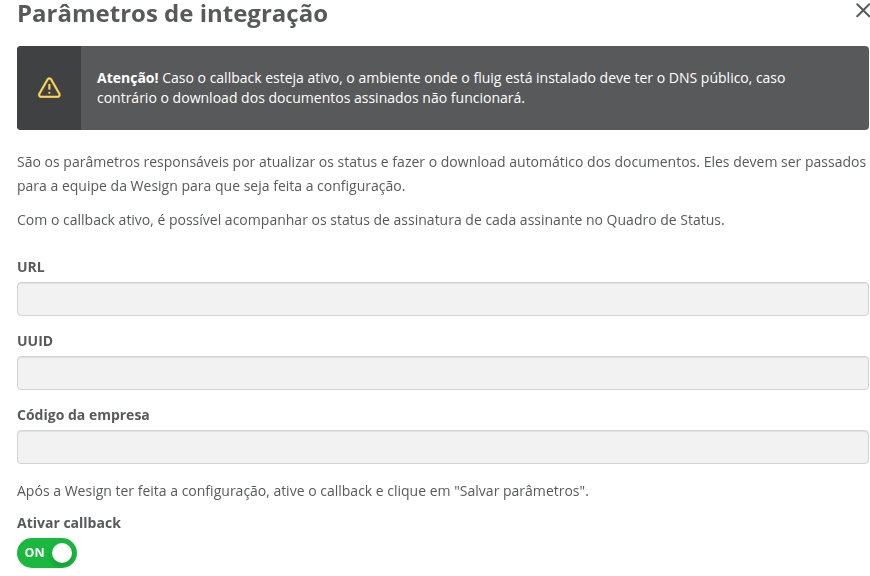

Serviço Callback
O Callback é um serviço que avisa automaticamente seu TOTVS fluig quando acontece alguma ação no documento,
como a assinatura
de um participante. Ele ajuda a manter as informações do documento sempre atualizadas em tempo real.
Ou seja, assim que o documento é assinado, o Portal de Assinaturas envia um aviso para que o status dessa assinatura
seja
atualizado na hora no TOTVS fluig.
Para seu funcionamento, é necessário que o endereço do TOTVS fluig público, ou seja, não necessite
de acesso à uma VPN.
Se o servidor de aplicação do TOTVS fluig possui regras de acesso, é necessário que os endereços de
IP abaixo sejam liberados.
Estes são os endereços de IP que os servidores do Portal de Assinaturas utilizará para enviar as notificações ao TOTVS
fluig:
Produção
104.41.15.44,104.41.14.184,104.41.13.132,104.41.12.97,20.201.81.246,104.41.56.229,104.41.30.250,
20.206.191.81,191.235.52.58,191.235.52.65,191.235.52.78,191.235.52.195,191.235.52.245,191.235.53.35,
191.235.53.57,191.235.53.74,191.235.53.158,191.235.54.48,191.235.54.59,104.41.13.179
Homologação
191.235.41.23,191.235.42.102,191.235.43.227,191.235.44.10,191.235.44.21,191.235.44.195,20.206.225.71,
191.235.57.182,191.235.60.212,20.226.162.193,20.226.162.236,20.226.163.21,20.226.163.71,20.226.163.144,
20.226.163.231,20.226.164.12,20.226.164.22,20.226.165.196,20.226.165.221,20.226.165.232,20.226.166.183,
20.226.167.46,20.226.163.69,20.226.167.66,20.226.167.68,20.226.167.129,20.226.167.172,20.226.167.223,
20.226.167.244,20.226.167.247,20.206.176.5
Se o seu ambiente não utilizar o Callback ou por algum motivo o serviço de
Callback não notificar o TOTVS fluig,
os dados dos documentos serão atualizados através do dataset ds_package_wesign.
Acesse Datasets sincronizados para
maiores informações.
